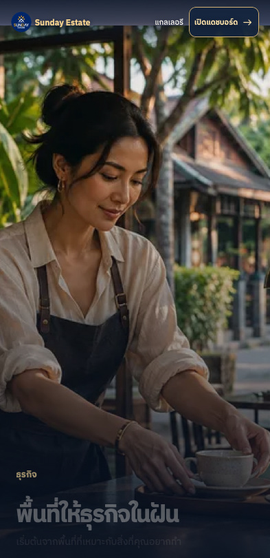
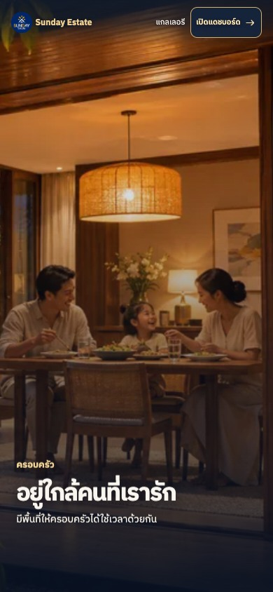
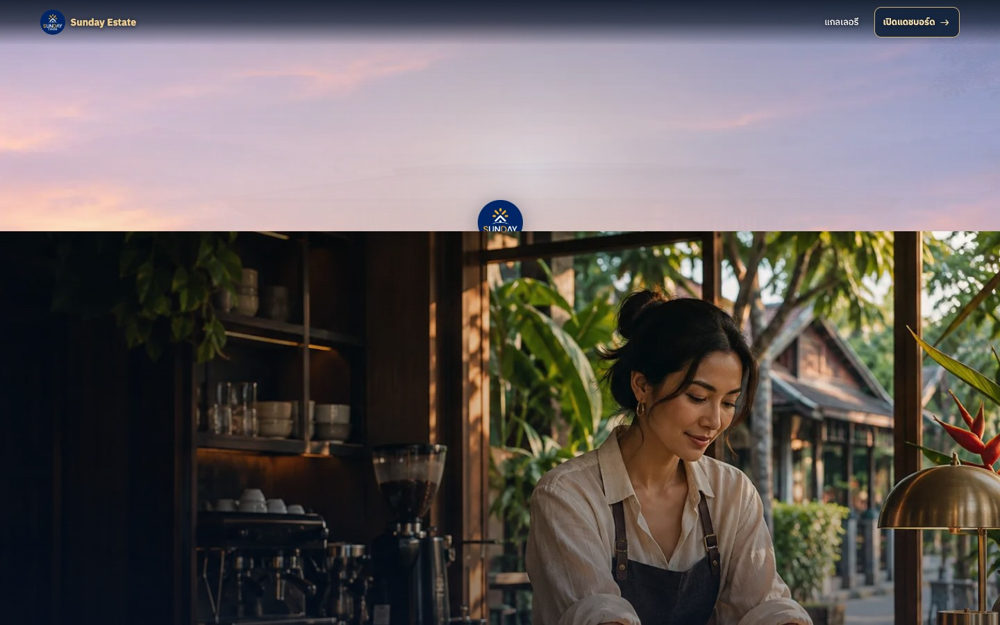
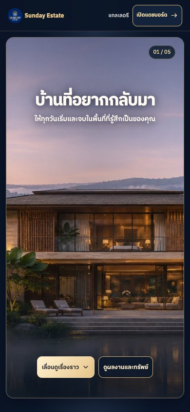
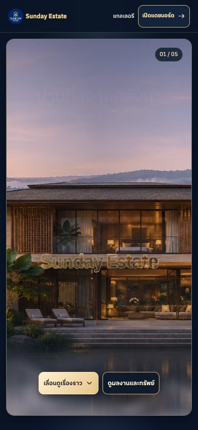
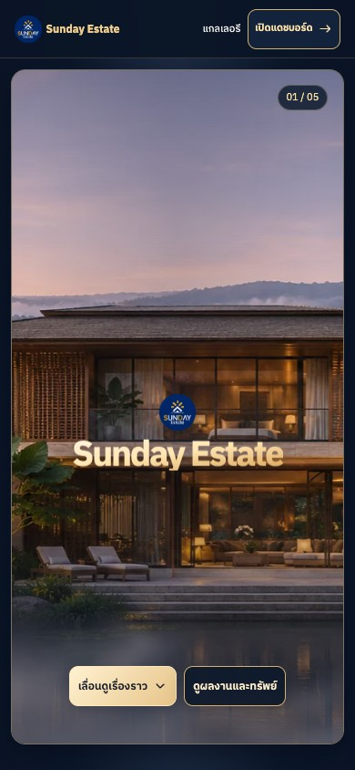
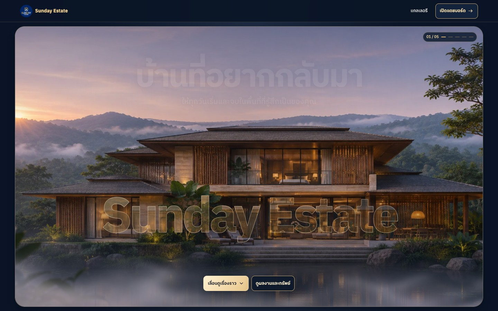

เปิดหน้าแรก
ภาพหน้าจอ Aurora V2.31
แตะภาพเพื่อเปิดขนาดเต็ม
สีชื่อ SUNDAY ESTATE ตอนท้าย Intro
ข้อความกลางภาพใน Hero ฉาก 2–5
เมนูหน้าแรกและข้อมูลบริษัท V2.29
ข้อความลอยขึ้นตามการเลื่อน V2.27

เริ่มเห็นหัวเรื่อง
หัวเรื่องลอยขึ้นตามการเลื่อน
ข้อความเข้าที่และอ่านได้เต็มที่
ภาพหลักคมชัดและภาพรอบวงเบลอ V2.26.1
ภาพกลางและแนวซ้อนด้านข้าง V2.26
วงล้อเน้นภาพกลาง V2.25
วงล้อภาพ V2.24
หมอกในเฟรมเผยโลโก้ · WebKit บนจอมือถือจำลอง
มือถือ · ฉากเต็มจอ V2.23
ฉากธุรกิจเลื่อนทับ Intro ที่ยังตรึงอยู่
ภาพเต็มจอและหัวเรื่องฉากธุรกิจ
ภาพเต็มจอและหัวเรื่องฉากที่ดิน
ภาพเต็มจอและหัวเรื่องฉากวัยเกษียณ

ภาพเต็มจอและหัวเรื่องฉากครอบครัว
เดสก์ท็อป · ฉากเต็มจอ V2.23

ฉากธุรกิจเลื่อนทับ Intro ที่ยังตรึงอยู่
ภาพเต็มจอและหัวเรื่องฉากธุรกิจ
ภาพเต็มจอและหัวเรื่องฉากที่ดิน
ภาพเต็มจอและหัวเรื่องฉากวัยเกษียณ
ภาพเต็มจอและหัวเรื่องฉากครอบครัว
มือถือ · แกลเลอรี V2.23
เดสก์ท็อป · แกลเลอรี V2.23
มือถือ · จังหวะเผยชื่อ V2.22
เดสก์ท็อป · จังหวะเผยชื่อ V2.22
มือถือ · ฉากเปิด V2.21
เดสก์ท็อป · ฉากเปิด V2.21
ฉากเปิด V2.20

เฟรมแรก บ้านยามเช้าและหัวเรื่อง · มือถือ

ช่วงที่หมอกเลื่อนผ่านและชื่อเริ่มปรากฏ · มือถือ

ชื่อ Sunday Estate สีทองและโลโก้เดิม · มือถือ
เฟรมแรก บ้านยามเช้าและหัวเรื่อง · เดสก์ท็อป

ช่วงที่หมอกเลื่อนผ่านและชื่อเริ่มปรากฏ · เดสก์ท็อป
ชื่อ Sunday Estate สีทองและโลโก้เดิม · เดสก์ท็อป
วงล้อแกลเลอรีและจัดการทรัพย์ V2.19
ตัวเลือกค้นหา Hero และทรัพย์ V2.18
เลือกสัญญา · มือถือ
ตัวกรองหลายสถานะ · มือถือ
Hero · มือถือ
ทรัพย์ตัวอย่าง · เดสก์ท็อป
ทรัพย์ตัวอย่าง · มือถือ
Skeleton · มือถือ
สลับพื้นที่และข้อความแจ้งผล V2.17
บัญชี A · ภาพรวมสองพื้นที่
หน้าต่างสลับพื้นที่ · มือถือ
ปล่อยกู้ส่วนตัว · ปุ่มกลางรับชำระ
บัญชี B · ดีลร่วมทุน D1
Toast ขนาดเล็ก · มุมขวาบน
ข้อความแจ้งผล V2.16
Toast Stack · มือถือ
Toast Stack · เดสก์ท็อป
จัดหน้า ทางลัด และผู้ช่วย V2.15
 จัดหน้า · ขณะลากบนมือถือ
ทางลัดชำระเงิน · ผู้กู้
ตรวจยอดก่อนชำระ
ผู้ช่วย · ขอบเขตข้อมูลผู้กู้
จัดหน้า · ขณะลากบนมือถือ
ทางลัดชำระเงิน · ผู้กู้
ตรวจยอดก่อนชำระ
ผู้ช่วย · ขอบเขตข้อมูลผู้กู้
ภาพปกและโปรไฟล์ V2.14
ภาพรวม · มือถือ · สว่าง
 ภาพรวม · เดสก์ท็อป · มืด
ภาพรวม · เดสก์ท็อป · มืด
 โปรไฟล์ · มือถือ · สว่าง
ปล่อยกู้ / ขายฝาก · มือถือ · สว่าง
โปรไฟล์ · มือถือ · สว่าง
ปล่อยกู้ / ขายฝาก · มือถือ · สว่าง
 ลงทุนที่ดิน · มือถือ · สว่าง
สัญญาของฉัน · มือถือ · สว่าง
กระทบยอด · มือถือ · สว่าง
ปล่อยกู้ / ขายฝาก · เดสก์ท็อป · มืด
ลงทุนที่ดิน · เดสก์ท็อป · มืด
สัญญาของฉัน · เดสก์ท็อป · มืด
ลงทุนที่ดิน · มือถือ · สว่าง
สัญญาของฉัน · มือถือ · สว่าง
กระทบยอด · มือถือ · สว่าง
ปล่อยกู้ / ขายฝาก · เดสก์ท็อป · มืด
ลงทุนที่ดิน · เดสก์ท็อป · มืด
สัญญาของฉัน · เดสก์ท็อป · มืด
 กระทบยอด · เดสก์ท็อป · มืด
กระทบยอด · เดสก์ท็อป · มืด
 โปรไฟล์ · เดสก์ท็อป · มืด
โปรไฟล์ · เดสก์ท็อป · มืด
จัดหน้าและกระทบยอด V2.13
 จัดหน้า Dashboard · มือถือ
จัดหน้า Dashboard · มือถือ
 ทบทวนคู่รายการ · มือถือ
กระทบยอด · เดสก์ท็อป · สว่าง
กระทบยอด · เดสก์ท็อป · มืด
ภาพรวม · มือถือ · สว่าง
ปล่อยกู้ / ขายฝาก · มือถือ · สว่าง
ลงทุนที่ดิน · มือถือ · สว่าง
โปรไฟล์ · มือถือ · สว่าง
ทบทวนคู่รายการ · มือถือ
กระทบยอด · เดสก์ท็อป · สว่าง
กระทบยอด · เดสก์ท็อป · มืด
ภาพรวม · มือถือ · สว่าง
ปล่อยกู้ / ขายฝาก · มือถือ · สว่าง
ลงทุนที่ดิน · มือถือ · สว่าง
โปรไฟล์ · มือถือ · สว่าง
 ภาพรวม · เดสก์ท็อป · มืด
ปล่อยกู้ / ขายฝาก · เดสก์ท็อป · มืด
ลงทุนที่ดิน · เดสก์ท็อป · มืด
ภาพรวม · เดสก์ท็อป · มืด
ปล่อยกู้ / ขายฝาก · เดสก์ท็อป · มืด
ลงทุนที่ดิน · เดสก์ท็อป · มืด
 โปรไฟล์ · เดสก์ท็อป · มืด
โปรไฟล์ · เดสก์ท็อป · มืด
สีการ์ดและแบรนด์ V2.11
 V2.11 · มือถือ · สว่าง
V2.11 · มือถือ · สว่าง
 V2.11 · มือถือ · มืด
V2.11 · เดสก์ท็อป · สว่าง
V2.11 · เดสก์ท็อป · มืด
V2.11 · มือถือ · มืด
V2.11 · เดสก์ท็อป · สว่าง
V2.11 · เดสก์ท็อป · มืด
กราฟและการ์ดแนวโน้ม V2.10
Soft Aurora · ภาพรวม
 Modern Dark · ภาพรวม
กระแสเงินสด · มือถือ · สว่าง
กระแสเงินสด · มือถือ · มืด
Modern Dark · ภาพรวม
กระแสเงินสด · มือถือ · สว่าง
กระแสเงินสด · มือถือ · มืด
 พอร์ตสินเชื่อ · ช่วง 24 เดือน
พอร์ตสินเชื่อ · ช่วง 3 เดือน
พอร์ตสินเชื่อ · ช่วง 24 เดือน
พอร์ตสินเชื่อ · ช่วง 3 เดือน
ภาพจากเวอร์ชันก่อนหน้า
 พลิกการ์ด · ด้านหน้า 24 เดือน
พลิกการ์ด · จังหวะเห็นขอบ
พลิกการ์ด · ด้านหน้า 24 เดือน
พลิกการ์ด · จังหวะเห็นขอบ
 พลิกการ์ด · ด้านหลัง 12 เดือน
พลิกการ์ด · ด้านหลัง 12 เดือน
 ช่วงเริ่มต้น 24 เดือนและตัวกรองบนมือถือ
ช่วงเริ่มต้น 24 เดือนและตัวกรองบนมือถือ
 ไล่สีแท่งกระแสเงินสด · สว่าง
ไล่สีแท่งกระแสเงินสด · สว่าง
 ไล่สีแท่งกระแสเงินสด · มืด
ไล่สีแท่งกระแสเงินสด · มืด
 Hero · ฉากเปิดบนมือถือ
Hero · ฉากซ้อนกันขณะเลื่อน
Hero · ฉากเปิดบนมือถือ
Hero · ฉากซ้อนกันขณะเลื่อน
 แกลเลอรี · มือถือ
แกลเลอรี · มือถือ
 ภาพรวม · เดสก์ท็อป · สว่าง
ภาพรวม · เดสก์ท็อป · สว่าง
 ภาพรวม · เดสก์ท็อป · มืด
ภาพรวม · เดสก์ท็อป · มืด
 ภาพรวม · มือถือ · สว่าง
ขายฝาก · มือถือ · มืด
ภาพรวม · มือถือ · สว่าง
ขายฝาก · มือถือ · มืด
 ปล่อยกู้ · เดสก์ท็อป · สว่าง
ปล่อยกู้ · เดสก์ท็อป · สว่าง
 โปรไฟล์และการตั้งค่า · มือถือ
ลงทุนทั้งดีล · เปอร์เซ็นต์เป็นเงิน
โปรไฟล์และการตั้งค่า · มือถือ
ลงทุนทั้งดีล · เปอร์เซ็นต์เป็นเงิน
 ลงทุนทั้งดีล · เงินเป็นเปอร์เซ็นต์
ลงทุนทั้งดีล · เงินเป็นเปอร์เซ็นต์